Chapter 22 Absenteeism at work
The high competitiveness in the market, professional development combined with the development of organizations and the pressure to reach increasingly audacious goals, create increasingly overburdened employees and end up acquiring some disturbance in the state of health related to the type of work activity, including depression considered the evil of the 21st century. Taking employees to absenteeism. Absenteeism is defined as absence to work as expected, represents for the company the loss of productivity and quality of work.
The data set has been taken from UCI - Absenteeism at work. The database used has 21 attributes and 740 records from documents that prove that they are absent from work and was collected from January 2008 to December 2016.
22.1 Data reading
22.2 Basic statistics and data preparation
Factors are in interger format , so for the sake of analysis we have changed them to factor format.
Classes 'spec_tbl_df', 'tbl_df', 'tbl' and 'data.frame': 740 obs. of 21 variables:
$ ID : num 11 36 3 7 11 3 10 20 14 1 ...
$ Reason for absence : num 26 0 23 7 23 23 22 23 19 22 ...
$ Month of absence : num 7 7 7 7 7 7 7 7 7 7 ...
$ Day of the week : num 3 3 4 5 5 6 6 6 2 2 ...
$ Seasons : num 1 1 1 1 1 1 1 1 1 1 ...
$ Transportation expense : num 289 118 179 279 289 179 361 260 155 235 ...
$ Distance from Residence to Work: num 36 13 51 5 36 51 52 50 12 11 ...
$ Service time : num 13 18 18 14 13 18 3 11 14 14 ...
$ Age : num 33 50 38 39 33 38 28 36 34 37 ...
$ Work load Average/day : num 240 240 240 240 240 ...
$ Hit target : num 97 97 97 97 97 97 97 97 97 97 ...
$ Disciplinary failure : num 0 1 0 0 0 0 0 0 0 0 ...
$ Education : num 1 1 1 1 1 1 1 1 1 3 ...
$ Son : num 2 1 0 2 2 0 1 4 2 1 ...
$ Social drinker : num 1 1 1 1 1 1 1 1 1 0 ...
$ Social smoker : num 0 0 0 1 0 0 0 0 0 0 ...
$ Pet : num 1 0 0 0 1 0 4 0 0 1 ...
$ Weight : num 90 98 89 68 90 89 80 65 95 88 ...
$ Height : num 172 178 170 168 172 170 172 168 196 172 ...
$ Body mass index : num 30 31 31 24 30 31 27 23 25 29 ...
$ Absenteeism time in hours : num 4 0 2 4 2 2 8 4 40 8 ...
- attr(*, "spec")=
.. cols(
.. ID = col_double(),
.. `Reason for absence` = col_double(),
.. `Month of absence` = col_double(),
.. `Day of the week` = col_double(),
.. Seasons = col_double(),
.. `Transportation expense` = col_double(),
.. `Distance from Residence to Work` = col_double(),
.. `Service time` = col_double(),
.. Age = col_double(),
.. `Work load Average/day ` = col_double(),
.. `Hit target` = col_double(),
.. `Disciplinary failure` = col_double(),
.. Education = col_double(),
.. Son = col_double(),
.. `Social drinker` = col_double(),
.. `Social smoker` = col_double(),
.. Pet = col_double(),
.. Weight = col_double(),
.. Height = col_double(),
.. `Body mass index` = col_double(),
.. `Absenteeism time in hours` = col_double()
.. ) ID Reason for absence Month of absence Day of the week
Min. : 1 Min. : 0.0 Min. : 0.00 Min. :2.00
1st Qu.: 9 1st Qu.:13.0 1st Qu.: 3.00 1st Qu.:3.00
Median :18 Median :23.0 Median : 6.00 Median :4.00
Mean :18 Mean :19.2 Mean : 6.32 Mean :3.91
3rd Qu.:28 3rd Qu.:26.0 3rd Qu.: 9.00 3rd Qu.:5.00
Max. :36 Max. :28.0 Max. :12.00 Max. :6.00
Seasons Transportation expense Distance from Residence to Work
Min. :1.00 Min. :118 Min. : 5.0
1st Qu.:2.00 1st Qu.:179 1st Qu.:16.0
Median :3.00 Median :225 Median :26.0
Mean :2.54 Mean :221 Mean :29.6
3rd Qu.:4.00 3rd Qu.:260 3rd Qu.:50.0
Max. :4.00 Max. :388 Max. :52.0
Service time Age Work load Average/day Hit target
Min. : 1.0 Min. :27.0 Min. :206 Min. : 81.0
1st Qu.: 9.0 1st Qu.:31.0 1st Qu.:244 1st Qu.: 93.0
Median :13.0 Median :37.0 Median :264 Median : 95.0
Mean :12.6 Mean :36.5 Mean :271 Mean : 94.6
3rd Qu.:16.0 3rd Qu.:40.0 3rd Qu.:294 3rd Qu.: 97.0
Max. :29.0 Max. :58.0 Max. :379 Max. :100.0
Disciplinary failure Education Son Social drinker
Min. :0.000 Min. :1.00 Min. :0.00 Min. :0.000
1st Qu.:0.000 1st Qu.:1.00 1st Qu.:0.00 1st Qu.:0.000
Median :0.000 Median :1.00 Median :1.00 Median :1.000
Mean :0.054 Mean :1.29 Mean :1.02 Mean :0.568
3rd Qu.:0.000 3rd Qu.:1.00 3rd Qu.:2.00 3rd Qu.:1.000
Max. :1.000 Max. :4.00 Max. :4.00 Max. :1.000
Social smoker Pet Weight Height Body mass index
Min. :0.000 Min. :0.00 Min. : 56 Min. :163 Min. :19.0
1st Qu.:0.000 1st Qu.:0.00 1st Qu.: 69 1st Qu.:169 1st Qu.:24.0
Median :0.000 Median :0.00 Median : 83 Median :170 Median :25.0
Mean :0.073 Mean :0.75 Mean : 79 Mean :172 Mean :26.7
3rd Qu.:0.000 3rd Qu.:1.00 3rd Qu.: 89 3rd Qu.:172 3rd Qu.:31.0
Max. :1.000 Max. :8.00 Max. :108 Max. :196 Max. :38.0
Absenteeism time in hours
Min. : 0.0
1st Qu.: 2.0
Median : 3.0
Mean : 6.9
3rd Qu.: 8.0
Max. :120.0 # converting variables to factors
col <- c(2:5,12:17)
absenteeism_at_work_factored <- absenteeism_at_work
absenteeism_at_work_factored[col] <- lapply(absenteeism_at_work_factored[col], factor)
# converting codes to meaningful information
absenteeism_at_work_factored <- absenteeism_at_work_factored %>%
mutate(`Reason for absence` = fct_recode(`Reason for absence`,`Infectious, parasitic diseases`="0", `Neoplasms`="1",`Diseases of the blood`="2",`Endocrine and metabolic diseases`="3",`Mental and behavioural disorders`="4",`Diseases of the nervous system`="5",`Diseases of the eye and adnexa`="6",`Diseases of the ear and mastoid process`="7",`Diseases of the circulatory system`="8",`Diseases of the respiratory system`="9",`Diseases of the digestive system`="10", `Diseases of the skin and subcutaneous tissue`="11",`Diseases of the musculoskeletal system and connective tissue`="12", `Diseases of the genitourinary system`="13",`Pregnancy, childbirth and the puerperium`="14",`Certain conditions originating in the perinatal`="15", `Congenital malformations, deformations and chromosomal abnormalities`= "16",`Symptoms, signs and abnormal clinical findings`="17", `Injury, poisoning and certain other consequences of external causes`= "18",`causes of morbidity and mortality`="19", `Factors influencing health status and contact with health services`="21",`patient follow-up`="22",`medical consultation`="23",`blood donation`="24", `laboratory examination`="25", `unjustified absence`="26", `physiotherapy`="27", `dental consultation`="28"))
absenteeism_at_work_factored <- absenteeism_at_work_factored %>%
mutate(`Month of absence`= fct_recode(`Month of absence`,None="0",Jan="1",Feb="2",Mar="3",Apr="4",May="5", Jun="6",Jul="7",Aug="8",Sep="9",Oct="10",Nov="11",Dec="12") )
absenteeism_at_work_factored <- absenteeism_at_work_factored %>%
mutate(Seasons= fct_recode(Seasons,summer="1",autumn="2",winter="3",spring="4"))
absenteeism_at_work_factored <- absenteeism_at_work_factored %>%
mutate(Education = fct_recode(Education,highschool="1",graduate="2",postgraduate="3",`master& doctrate`="4"))
absenteeism_at_work_factored <- absenteeism_at_work_factored %>%
mutate(`Disciplinary failure`= fct_recode(`Disciplinary failure`,No="0",Yes="1"))
absenteeism_at_work_factored <- absenteeism_at_work_factored %>%
mutate(`Social drinker`= fct_recode(`Social drinker`,No="0",Yes="1"))
absenteeism_at_work_factored <- absenteeism_at_work_factored %>%
mutate(`Social smoker`= fct_recode(`Social smoker`,No="0",Yes="1"))
absenteeism_at_work_factored <- absenteeism_at_work_factored %>%
mutate(`Day of the week` = fct_recode(`Day of the week`, Monday="2", Tuesday="3", Wednesday="4", Thursday="5", Friday="6"))22.3 Data exploration
p <- absenteeism_at_work_factored %>%
ggplot() +
aes(x = Pet, fill = Pet) +
geom_bar()
s <- absenteeism_at_work_factored %>%
ggplot() +
aes(x = Son, fill = Son) +
geom_bar()
SS <- absenteeism_at_work_factored %>%
ggplot() +
aes(x =`Social smoker`, fill =`Social drinker`) +
geom_bar()
S <- absenteeism_at_work_factored %>%
ggplot() +
aes(x = Seasons,fill = Seasons) +
geom_bar()
Day <- absenteeism_at_work_factored %>%
ggplot() +
aes(x =`Day of the week`, fill =`Day of the week`) +
geom_bar()
grid.arrange(p,s, nrow = 1)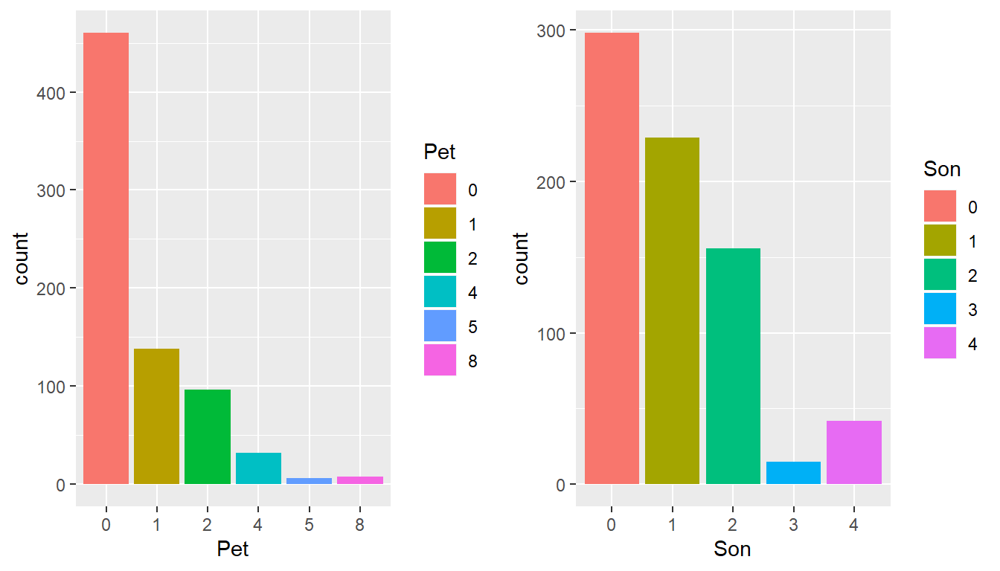
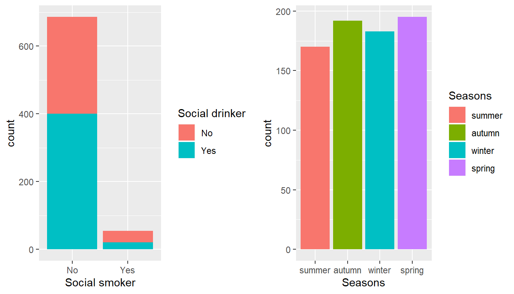
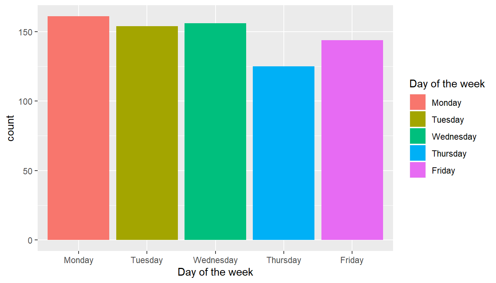
22.4 Some more digging into the data
I have taken those data that consists of Absenteesim in hours that are relavent to the analysis.
The 649 obs were found to have absent with respect to total of 740 obs.
Here the proportion of elements of categorical variables that contribute to the target variable.
I have taken only certain variable that I thought would come in to process.
absent <- as.data.frame(absenteeism_at_work_factored %>% dplyr::select(everything()) %>% dplyr::filter(`Absenteeism time in hours` > 0))
season1 <- as.data.frame(absent %>% dplyr::group_by(Seasons) %>% dplyr::summarise(count= n(), percent = round(count*100/nrow(absent),1)) %>% arrange(desc(count)))
season1 %>%
ggplot() +
aes(x= reorder(Seasons,percent), y= percent, fill = Seasons) +
geom_bar(stat='identity') +
coord_flip() +
geom_text(aes(label = percent), vjust = 1.1, hjust = 1.2) +
xlab('Seasons')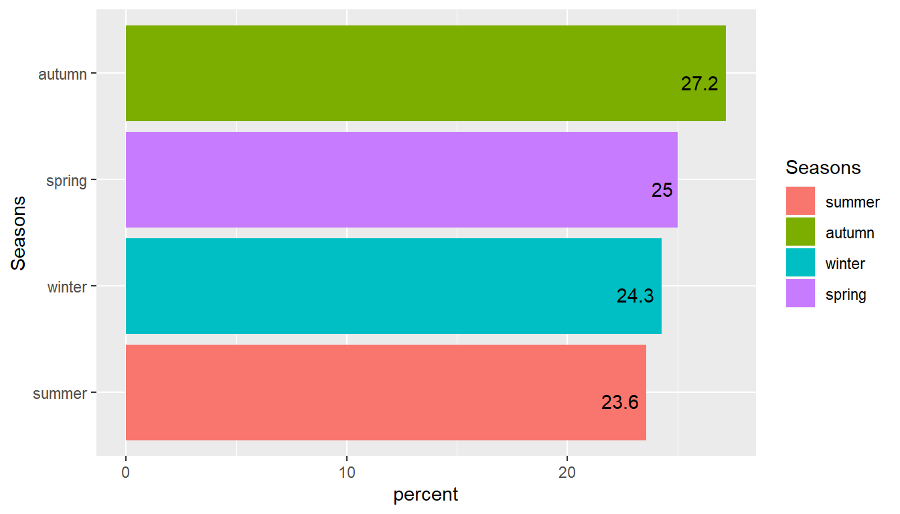
The attribute disciplinary failure is taken into consideration and it was found it had no obvious part on target variable. Basically all disciplinary failures resulted in zero hours absences.
disciplinary <- as.data.frame(absent %>% dplyr::group_by(`Disciplinary failure`) %>% dplyr::summarise(count= n(), percent = round(count*100/nrow(absent),1))%>% arrange(desc(count)))
disciplinary %>%
ggplot() +
aes(x= reorder(`Disciplinary failure`,percent),
y= percent, fill = `Disciplinary failure`) +
geom_bar(stat='identity') +
coord_flip() +
geom_text(aes(label = percent), vjust = 1.1, hjust = 1.2) +
xlab('Disciplinary failure')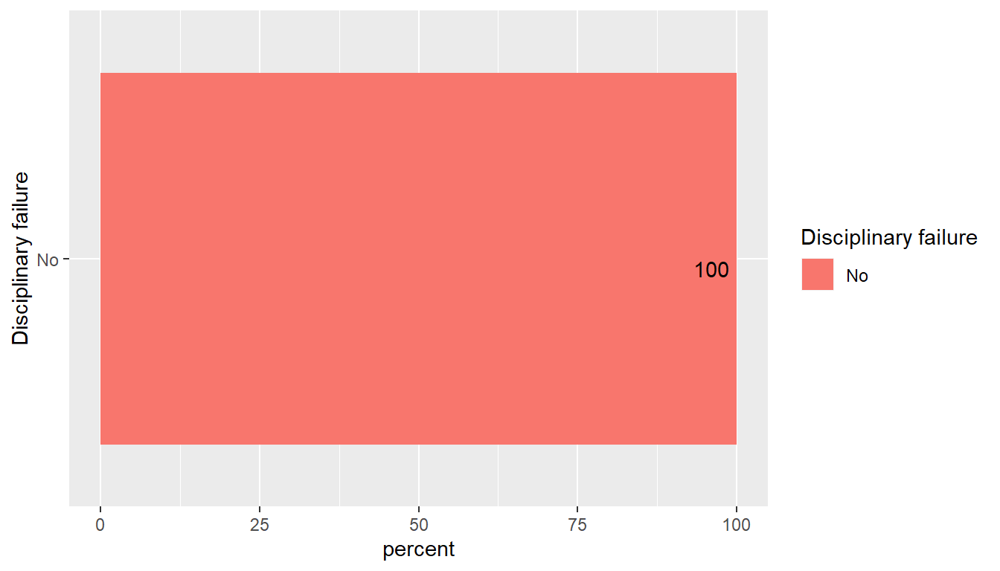
22.5 Here the various types of reasons for absence attribute is analysed
NOTE: The top four of them cover 50% of the resons for absence
* medical consultation
* dental consultation
* physiotherapy
* Disease of genitourinary system
The unjusitified absence amounts to 4.7% of total.
Reason <- as.data.frame(absent %>% group_by(`Reason for absence`) %>% dplyr::summarise(count= n(), percent = round(count*100/nrow(absent),1))%>% arrange(desc(count)))
Reason %>%
ggplot() +
aes(x = reorder(`Reason for absence`,percent),
y= percent, fill= `Reason for absence`) +
geom_bar(stat = 'identity') +
coord_flip() +
theme(legend.position='none') +
geom_text(aes(label = percent), vjust = 0.5, hjust = 1.1) +
xlab('Reason for absence')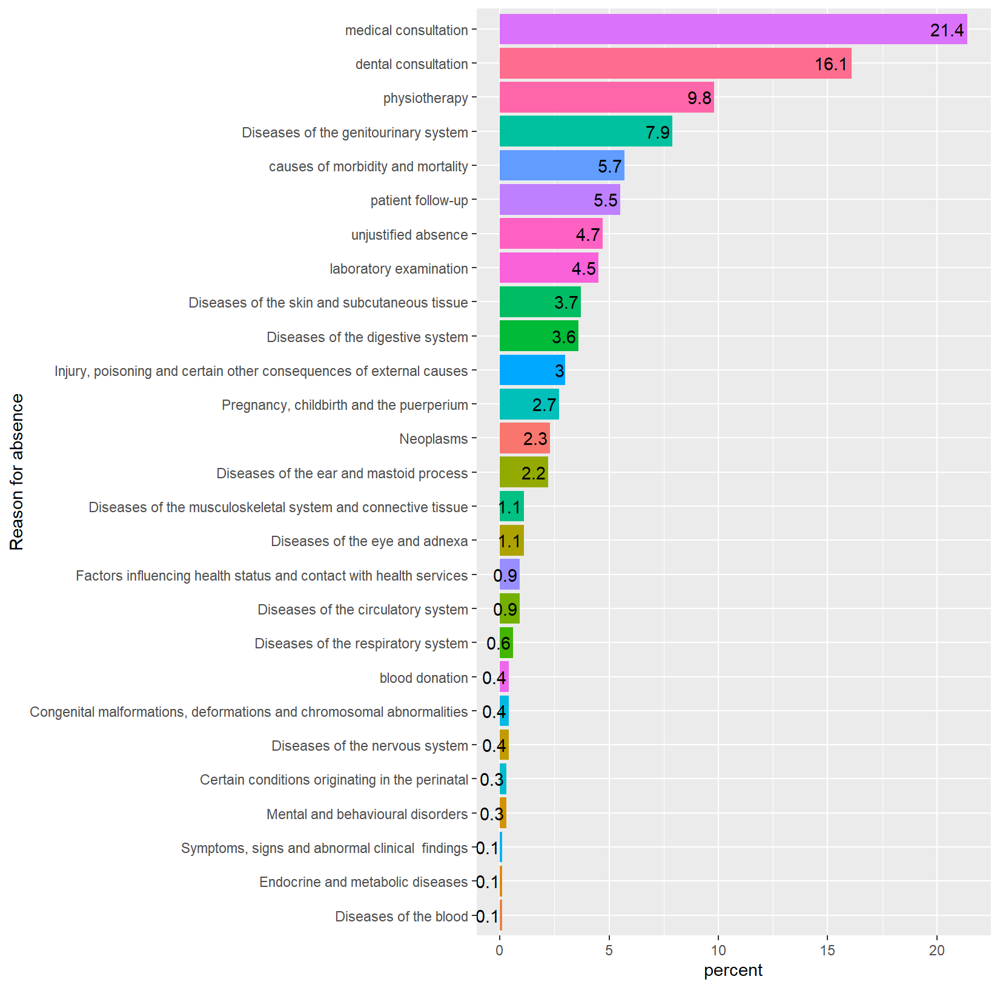
Close to the half of employees drink alcohol(320/420), so the attempted analysis can be taken into consideration that the it can be a element that influence the target variable.
absent %>%
ggplot() +
aes(x= Age,y= `Absenteeism time in hours`,fill= `Social drinker`)+
geom_bar(stat='identity',position= position_dodge()) +
scale_x_continuous(breaks =c(seq(20,60,5)),limits=c(20,60))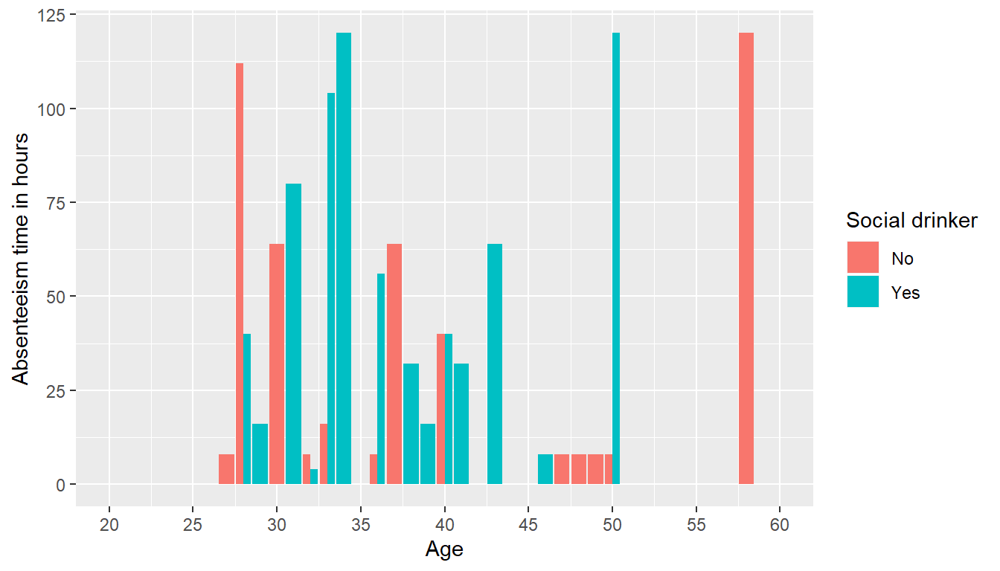
Service time across hit target
absent %>%
ggplot() +
aes(x= `Service time`,
y= `Hit target`) +
geom_point() +
geom_smooth(method = 'loess') +
ggtitle('Analysis of Hit target across Service time') +
xlab('Service time(years)') +
ylab('Hit target(%)')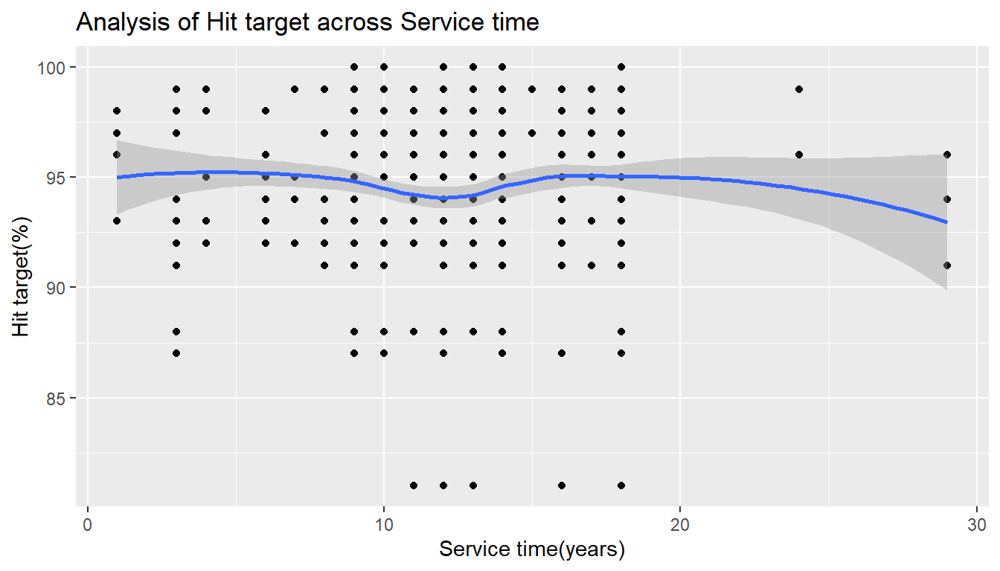
Hit target is achieved by the employees of different age segments
absent %>%
ggplot() +
aes(x= Age,y= `Hit target`) +
geom_point() +
geom_smooth(method = 'loess') +
labs(title='Analysis of Hit target across Age',
x='Age',
y='Hit target(%)')
Here trend of service time across age is taken. And they have positive correlation
absent %>%
ggplot() +
aes(x= Age,y= `Service time`) +
geom_point() +
geom_smooth(method = 'lm') +
labs(title='Analysis of Service time across Age',
x='Age',
y='Service time')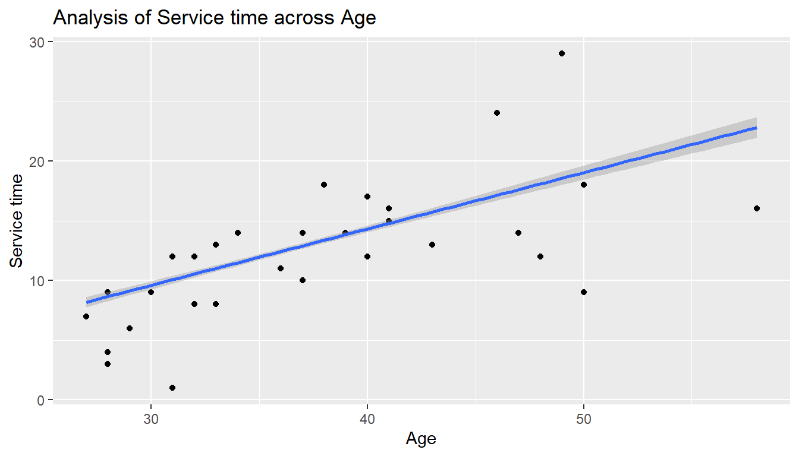
22.6 Principal component analysis (PCA)
A principal component analysis is used to extract the most important information from a multivariate data table and to express this information as a set of new variables called principal components. Principal component analysis (PCA) reduces the dimensionality of multivariate data, to two or three that can be visualized graphically with minimal loss of information.
The information in a given data set corresponds to the total variation it contains. The goal of PCA is to identify directions along which the variation in the data is maximal. These directions (called also principal components) can be used to visualize graphically the data.
We will be using the FactoMineR (for computing PCA) and factoextra (for PCA visualization) packages.
The first part of this article describes quickly how to compute and visualize principal component analysis using FactoMineR and factoextra The second part shows how to identify the most important variables that explain the variations in your data
Data preparation for PCA
absenteeism_at_work$`Work load Average/day ` <- as.numeric(as.character(absenteeism_at_work$`Work load Average/day ` ))
d1 <- absenteeism_at_work %>%
dplyr::select(-ID) %>%
dplyr::select(-`Absenteeism time in hours`)
d1 <- scale(d1) PCA
In the following we will produce a scree plot. The scree plot is a an analysis that shows you how many factors or components you have to retain in your factor or principal components analysis. It is a graphical representation. The assumption is that “the elbow” tells you how many factors or components you have to retain. The elbow means when the line of the graph starts to smooth up.
**Results for the Principal Component Analysis (PCA)**
The analysis was performed on 740 individuals, described by 19 variables
*The results are available in the following objects:
name description
1 "$eig" "eigenvalues"
2 "$var" "results for the variables"
3 "$var$coord" "coord. for the variables"
4 "$var$cor" "correlations variables - dimensions"
5 "$var$cos2" "cos2 for the variables"
6 "$var$contrib" "contributions of the variables"
7 "$ind" "results for the individuals"
8 "$ind$coord" "coord. for the individuals"
9 "$ind$cos2" "cos2 for the individuals"
10 "$ind$contrib" "contributions of the individuals"
11 "$call" "summary statistics"
12 "$call$centre" "mean of the variables"
13 "$call$ecart.type" "standard error of the variables"
14 "$call$row.w" "weights for the individuals"
15 "$call$col.w" "weights for the variables" #The proportion of variation retained by the principal components (PCs) can be extracted as follow :
egv1 <- get_eigenvalue(pcaex)
head(egv1[, 1:2]) eigenvalue variance.percent
Dim.1 3.34 17.58
Dim.2 2.26 11.88
Dim.3 1.94 10.21
Dim.4 1.51 7.94
Dim.5 1.39 7.30
Dim.6 1.23 6.49#Here, 60% of the information (variances) contained in the data are retained by the first six principal components.
#The amount of variation retained by each PC is called eigenvalues. The first PC corresponds to the direction with the maximum amount of variation in the data set.
#The importance of PCs can be visualized using a scree plot :
#Plot the eigenvalues/variances against the number of dimensions
# eigen values -
egv1 <- get_eigenvalue(pcaex)
fviz_eig(pcaex,addlabels=T)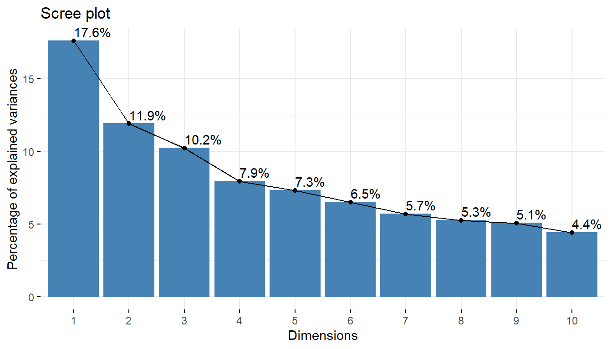
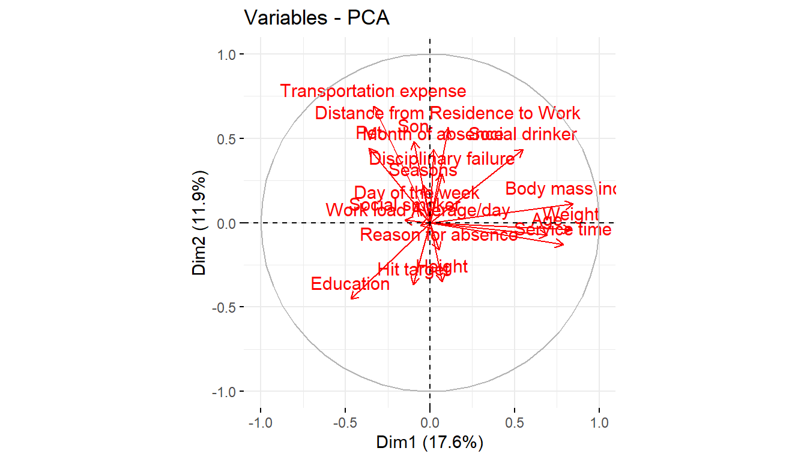
Dim.1 Dim.2 Dim.3 Dim.4 Dim.5
Reason for absence 0.0795 1.17165 25.29507 5.32313 1.849
Month of absence 0.0128 8.41604 7.75872 21.03291 4.322
Day of the week 0.1891 0.32499 1.76749 0.70991 13.827
Seasons 0.0428 2.16080 9.28314 6.51084 3.818
Transportation expense 3.3278 21.18599 0.26722 1.22436 2.164
Distance from Residence to Work 0.3434 13.77449 16.09334 0.00193 0.306
Service time 18.4990 0.72408 0.03471 2.54520 10.232
Age 14.3386 0.23638 1.85544 4.78763 7.462
Work load Average/day 0.1028 0.00934 2.01150 3.14305 0.965
Hit target 0.3061 5.93894 5.62363 10.88925 1.762
Disciplinary failure 0.1471 3.67096 20.46621 3.84722 0.230
Education 6.6039 9.08390 1.03185 0.86395 1.020
Son 0.2764 10.25788 0.00737 12.83974 0.553
Social drinker 8.9983 8.37065 2.81965 1.34722 1.728
Social smoker 0.6560 0.01194 1.78505 21.24828 5.712
Pet 3.8900 8.61414 0.45296 0.01825 10.086
Weight 20.7634 0.07215 0.41055 0.95704 11.429
Height 0.1488 5.43333 3.02288 0.79817 20.343
Body mass index 21.2742 0.54235 0.01320 1.91192 2.190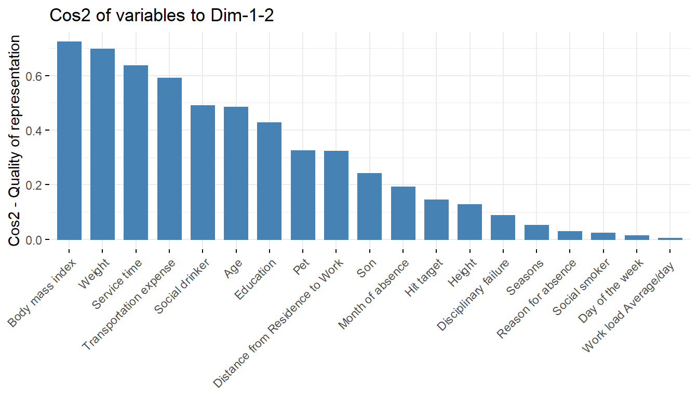
# contribution of variables to the respective principal components-
fviz_contrib(pcaex,choice='var',axes=1)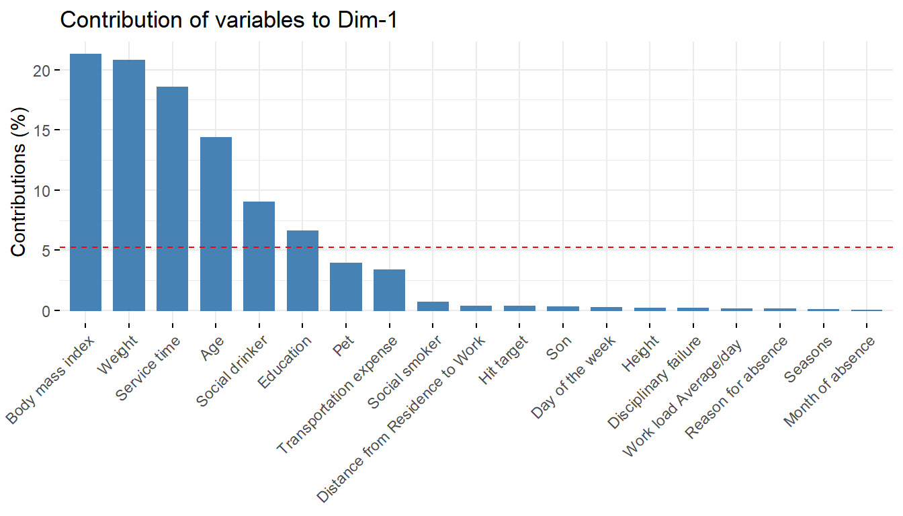
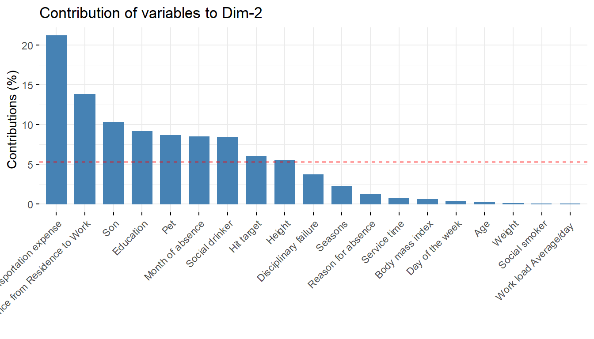
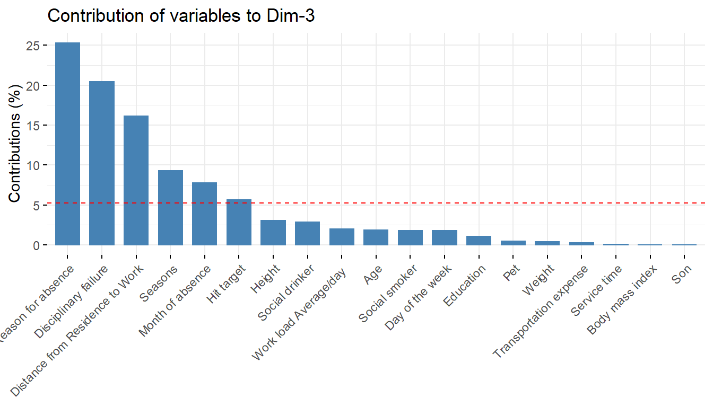
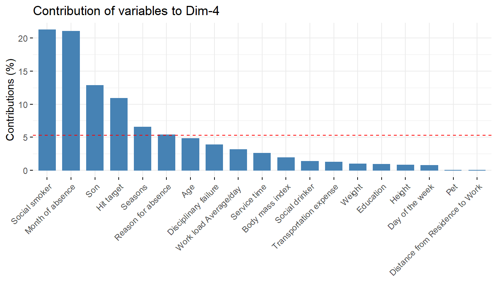
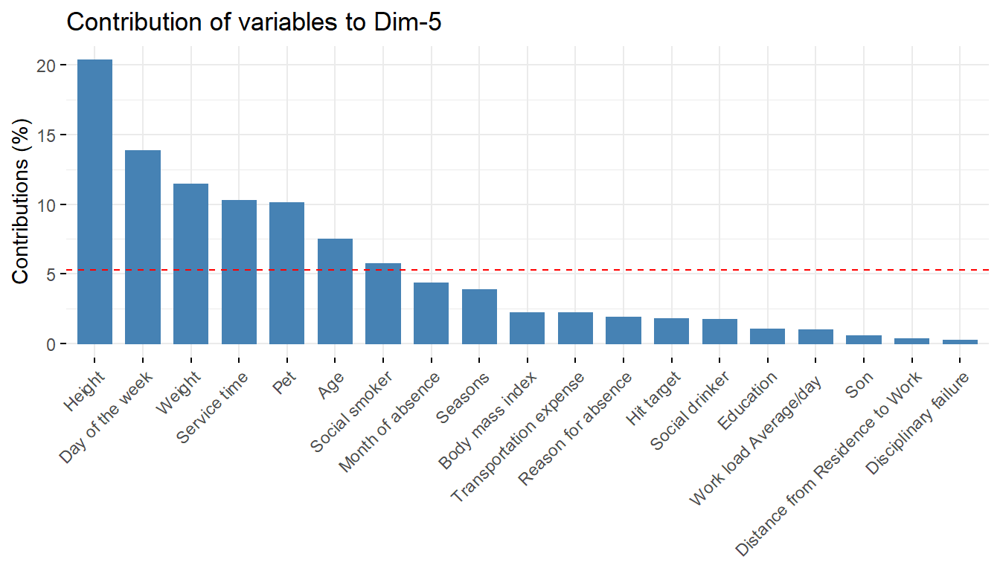